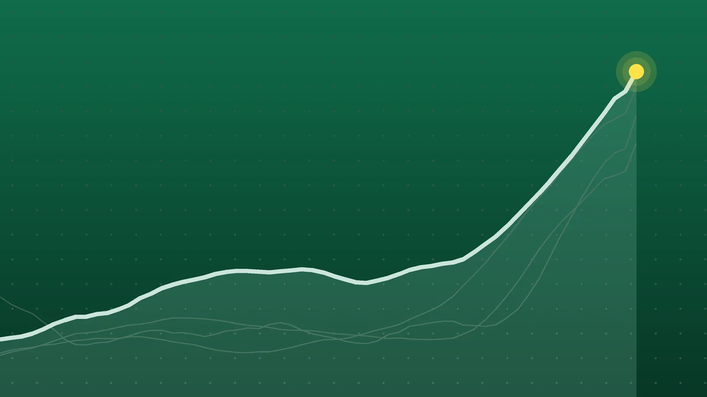

SportsExplainer
NFL Scores, Oct. 25: Seahawks Hand Chiefs First Loss, 20-3
Kansas City’s loss leaves Minnesota as the NFL’s only unbeaten team at 6-0, and several division showdowns are already set for next Sunday.

Quick take
- Seattle beat Kansas City 20-3 on Sunday night; Jaxon Smith-Njigba had 150 receiving yards and the Chiefs fell to 5-1.
- Minnesota beat Indianapolis 16-10 to reach 6-0 and is now the NFL’s only unbeaten team.
- Devin Singletary’s 30-yard overtime run gave the Giants a 27-21 win in Houston in J.J. McCarthy’s first start for New York.
- Jake Bates kicked a 22-yard field goal on the final play as Detroit beat Green Bay 20-17.
Why it's trending Twelve NFL games on Sunday, Oct. 25, included the Chiefs’ first loss, an overtime finish in Houston, a last-play field goal in Detroit and the league’s first game in France.
NFL scores for Oct. 25
Kansas City is no longer perfect. Seattle smothered the Chiefs 20-3 on Sunday night, holding Patrick Mahomes to 165 passing yards and keeping Kansas City out of the red zone all game, according to the ESPN game story. The Chiefs dropped to 5-1, which leaves Minnesota alone as the league’s last unbeaten team after the Vikings held off Indianapolis 16-10 to move to 6-0.
Two other Week 7 games came down to the final snap or beyond. The Giants won 27-21 in overtime in Houston behind J.J. McCarthy in his first start for New York, and Detroit beat Green Bay 20-17 on a field goal as time expired. Earlier, Pittsburgh won the NFL’s first game in France. All 12 Sunday games were played to a finish, per the FOX Sports scoreboard.
All final scores
| Winner | Score | Loser | Note |
|---|---|---|---|
| Pittsburgh Steelers | 16-10 | at New Orleans Saints | Played at Stade de France in Paris; Jaylen Warren 101 rushing yards |
| Tampa Bay Buccaneers | 43-13 | at Carolina Panthers | Most points by any team Sunday; Irving ran for 106 |
| Atlanta Falcons | 29-20 | San Francisco 49ers | Atlanta forced four turnovers, two of them Brock Purdy interceptions |
| New York Giants | 27-21 (OT) | at Houston Texans | Cam Skattebo career-high 124 rushing yards |
| Minnesota Vikings | 16-10 | Indianapolis Colts | Harrison Smith interception sealed it late |
| Miami Dolphins | 28-25 | at New York Jets | First win of the season for Miami |
| Cleveland Browns | 27-24 | at Tennessee Titans | Andre Szmyt’s third winning kick in four weeks |
| Cincinnati Bengals | 35-13 | at Baltimore Ravens | Joe Burrow four TD passes after a 13-0 halftime deficit |
| Denver Broncos | 30-16 | at Arizona Cardinals | Bo Nix 62-yard TD run |
| Los Angeles Rams | 35-21 | at Las Vegas Raiders | Williams ran for 99; Rams improved to 3-4 |
| Detroit Lions | 20-17 | Green Bay Packers | Jake Bates 22-yard kick on the final play |
| Seattle Seahawks | 20-3 | Kansas City Chiefs | Smith-Njigba nine catches, 150 yards |
Listed road teams went 8-4, counting Pittsburgh’s win in Paris as a road game. Scores match on the Pro-Football-Reference Week 7 page and FOX Sports.
Seattle shuts down Kansas City
Jaxon Smith-Njigba did most of his damage early. He piled up 129 receiving yards in the first half, a career best for any half, ESPN said. He also caught a 28-yard scoring pass from Sam Darnold with 1:44 left before the break for a 10-0 lead, AP reported. Darnold then threw an end-zone interception to Nohl Williams, but Harrison Butker came up short on a 58-yard try at the gun.
The Chiefs’ only points were a 50-yard Butker kick in the third quarter. Emanuel Wilson finished with 100 rushing yards and iced it with a 21-yard touchdown run with 3:47 left. Former Seahawk Kenneth Walker III, who entered as the NFL’s rushing leader, was held to 36 yards on 14 carries. Seattle has now gone 36 games without allowing a 100-yard rusher, per both AP and ESPN.
Giants win in overtime in Houston
McCarthy took over after coach John Harbaugh benched Jameis Winston and completed 20 of 28 passes for 252 yards, according to AP’s recap. The Giants led 21-14 after Skattebo’s 16-yard touchdown run, but Houston answered with a 3-yard scoring catch by Xavier Hutchinson with just under a minute left to force the extra period.
New York’s defense forced a three-and-out to open overtime. Skattebo then broke a 42-yard run, and Devin Singletary finished the drive with a 30-yard touchdown. The Giants outgained Houston 420 yards to 237 and neither team turned the ball over, per the FOX Sports box score. C.J. Stroud threw two touchdown passes but managed a season-low 153 yards. AP reported that Houston wide receiver Jaylin Noel exited during the fourth quarter with a toe injury.
Detroit edges Green Bay at the gun
The division rivals totaled 739 yards yet scored only 37 points, going 3 of 9 in the red zone, ProFootballTalk noted. Green Bay rookie kicker Trey Smack tied it at 17 with a 43-yarder, but DJ Wonnum blocked his 35-yard attempt with 3:21 left, his second miss of the day.
Detroit had given the Packers that chance by failing on a fourth-and-1 at its own 24. The Lions then went 71 yards in 10 plays, and Bates won it from 22 yards. Jared Goff threw for 303 yards and two touchdowns, both to Jameson Williams, while Amon-Ra St. Brown had a season-high 153 receiving yards, according to the FOX Sports box score. It was Detroit’s first set of back-to-back wins since last December.
What it means
The NFC North may be the deepest division in football. Minnesota (6-0) leads Chicago (5-2), Detroit (4-2) and Green Bay (4-3), and BBC Sport noted that it is one of two divisions in which all four teams have winning records entering Week 8, a first for the league. The Vikings’ streak is at 11 games dating to last season, and their defense has allowed a league-low 74 points, AP reported. Detroit sits two games back in the loss column with a chance to cut that in half when Minnesota visits next Sunday.
Elsewhere:
- AFC North: Cleveland and Pittsburgh are both 5-2, with Cincinnati at 4-2 and Baltimore at 4-3, so a single game separates first from fourth. BBC Sport has the Browns on top. Baltimore has lost two straight, and the team has not set a return date for Lamar Jackson, who has now sat out three consecutive games because of an ankle injury.
- AFC West: Kansas City (5-1) leads Denver (5-2) by half a game. The Broncos host the Chiefs next Sunday, so a Denver win would put the Broncos ahead on winning percentage.
- NFC West: San Francisco’s loss in Atlanta left the 49ers at 6-1. Seattle (4-3) is two games behind.
- NFC South: Carolina is 3-3 after its 30-point home loss, half a game ahead of Atlanta (3-4) and a game and a half ahead of Tampa Bay and New Orleans (both 2-5).
- Bottom of the AFC: Tennessee fell to 1-6. Miami’s win in New York left the Los Angeles Chargers as the league’s only winless team, per BBC Sport.
What’s next
Dallas (2-4) visits Philadelphia (2-4) on Monday night at 8:15 p.m. ET on ABC, according to Pro-Football-Reference and FOX Sports. The winner climbs to 3-4.
Week 8 opens Thursday, Oct. 29, with Carolina at Green Bay at 8:15 p.m. ET on Prime Video, per the NFL.com schedule. Next Sunday’s slate includes Minnesota at Detroit and Cleveland at Pittsburgh at 1 p.m. ET and Kansas City at Denver at 4:25 p.m. ET. Houston, New Orleans, the Giants and San Francisco have byes.
Sources
- Pro-Football-Reference 2026 Week 7Oct. 26, 2026
- FOX Sports NFL Scores, Week 7Oct. 26, 2026
- Associated Press via KSL.com Jaxon Smith-Njigba has 150 receiving yards and a score in the Seahawks' 20-3 win over the ChiefsOct. 25, 2026
- ESPN Jaxon Smith-Njigba, stifling defense help Seahawks hand Chiefs first lossOct. 25, 2026
- FOX Sports Chiefs vs. Seahawks box score, Oct. 25, 2026Oct. 25, 2026
- Associated Press via CBS News New York Singletary's 30-yard run in OT gives Giants 27-21 win over TexansOct. 25, 2026
- FOX Sports Giants vs. Texans box score, Oct. 25, 2026Oct. 25, 2026
- NBC Sports Lions beat Packers 20-17 on last-play field goalOct. 25, 2026
- FOX Sports Packers vs. Lions box score, Oct. 25, 2026Oct. 25, 2026
- Associated Press via CBS Sports Vikings lean on dominant defense to beat Colts, improve to 6-0Oct. 25, 2026
- CBS Pittsburgh Steelers beat Saints in NFL's first-ever game in Paris, 16-10Oct. 25, 2026
- BBC Sport via Yahoo Sports Vikings are last unbeaten team as Chiefs lose - NFL week sevenOct. 26, 2026
- NFL.com NFL Week 8 Schedule 2026Oct. 26, 2026
Keep reading

NBA Scores, Oct. 25: Doncic Scores 52 as Lakers Stay Unbeaten
NBA scores for Oct. 25, 2026: all 7 finals, including Luka Doncic’s 52 in a Lakers win at Utah, Detroit’s win in Philadelphia and the Knicks’ 0-3 start.

NHL Scores, Oct. 25: Canadiens Edge Jets in Heritage Classic
NHL scores for Oct. 25, 2026: all five finals, including Montreal’s 2-1 Heritage Classic win in Winnipeg and Quinn Hughes’ 500th point in a Wild win.

El Clásico: Mbappé Double Ends Barcelona’s Perfect Start, 2-1
Real Madrid beat Barcelona 2-1 in El Clásico on Oct. 25. How Mbappé’s two goals ended Barça’s 9-0 start, what it means for the La Liga title race and what’s next.